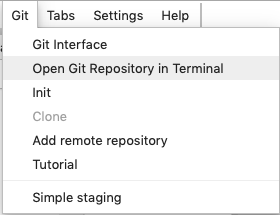
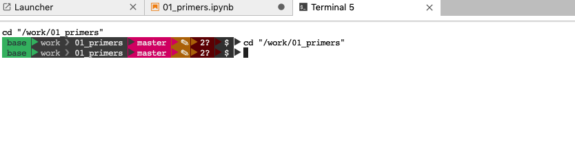
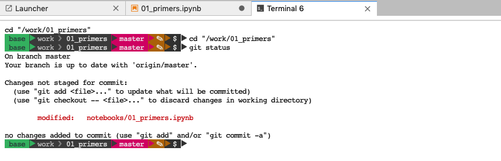
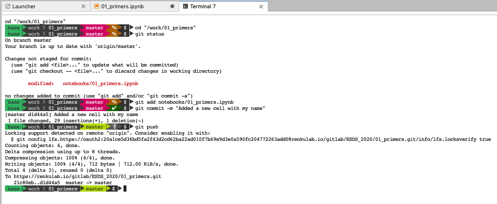
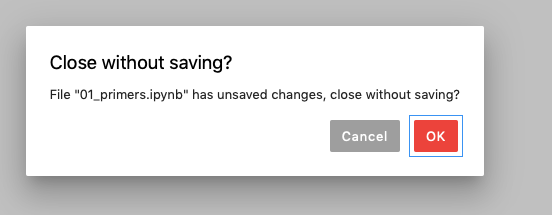
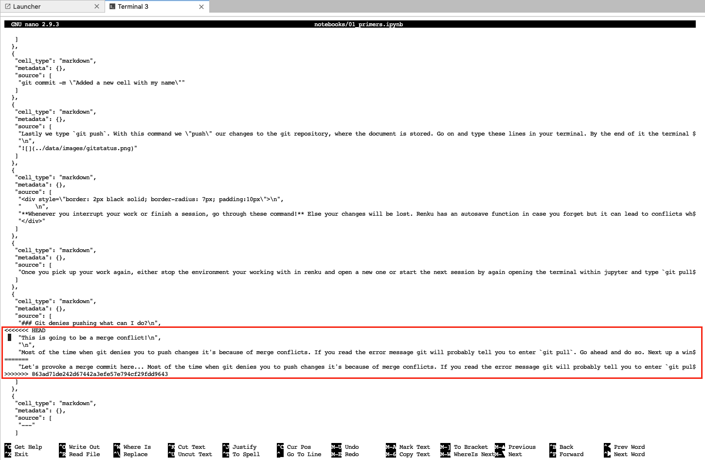
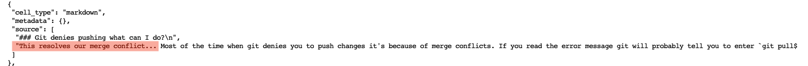
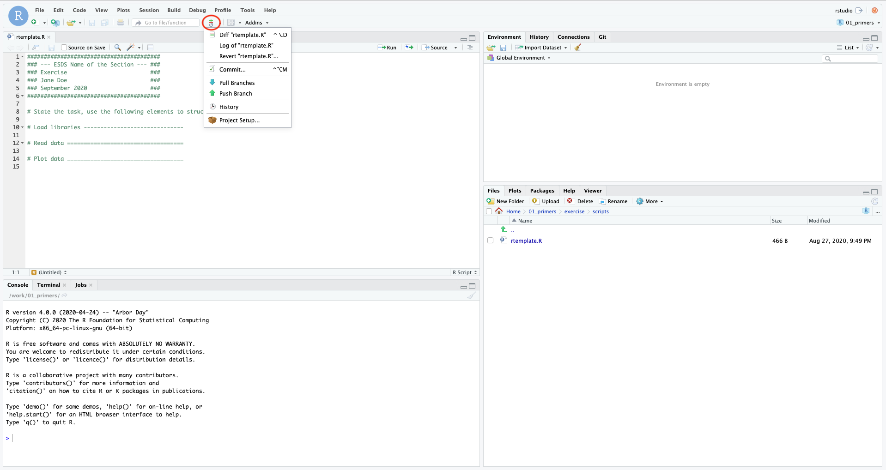

Chapter 2 Primers
2.1 Introduction
In this tutorial, we will learn how to structure a project and how to work with version control (Git). You will also learn how to read data into your workspace, get to know how different data is structured and understand different types of data. [As regard to analyses] conduct simple data explorations and visualisations, and write data to files. A key skill of data science and programming is to know where to get information when faced with a problem. No data scientist has solutions to every problem, but they all know where to find support.
After you’ve gone through the lecture and solved the exercises, you should be able to:
- Understand the definition of data science.
- Identify the different steps of a data science workflow.
- Recall a few typical examples of data science applications toward environmental problems.
- Explain what a system is and why system understanding is needed in environmental sciences.
- Define data, understand the structure of data, and list examples of environmental data.
- List sources of environmental data and explain the methodological difference in their collection.
- Execute R and load a dataset for data analyses.
- Apply basic Git commands for version control.
- Plot data analysis outputs and write them on the disk.
2.1.1 Important elements from the lecture
Generally, data can be described by four overarching characteristics:
- Volume: Data volume is simply the amount of data in a file or database.
- Velocity: Data velocity is the lag between time of observation and data ingest for analysis.
- Variety: Data variety is the diversity of data in a data collection or problem space.
- Veracity: Data veracity is the degree to which data is accurate and precise in comparison with a measured phenomenon
An increasing number of research organisations support the FAIR criteria for data use and sharing. They are as follows:
- Findable: Easy to find and well documented.
- Accessible: Long term storage and accessible with standard protocols.
- Interoperatable: Exchangeable and correctly cited.
- Reusable: Sufficiently documented and clear legal terms.
Environmental data is retrieved from a diversity of methods, including remote sensing, continuous site-scale measurements (e.g., meteorological variables, hydrological variables, ecosystem-atmosphere exchange fluxes of water vapour and CO2), episodic observations (e.g., forest inventories, biodiversity assessments), field campaigns, or experiments in the field or under laboratory conditions. Data from these sources come in different shapes and formats. In this course, we will learn to handle this diversity efficiently to answer research questions that you will likely encounter in the future. In many of the exercises, we will focus on data from continuous site scale observations, where meteorological variables are measured in parallel with ecosystem-atmosphere exchange fluxes of water vapour and CO2, collected by the Eddy covariance technique. In addition, you will learn to tap into large environmental data repositories to complement your site-scale data.
At the end of each chapter, a comprehensive exercise using RStudio on Renku is proposed. We will show you how to set up RStudio and Renku at the end of this tutorial.
2.2 Tutorial
2.2.1 Working with RStudio on Renku
Most of you have worked with R during previous lectures, most likely within RStudio. For this course, we are going to work with RStudio. Each chapter is made of two parts. The first part is a tutorial to learn the basics of data science in an environmental context where we will work on Renku. The second part usually consists of a somewhat more extensive exercise in RStudio where the contents of the tutorials are applied.
2.2.2 Using Git for version control
Git is a program which enables the organisation of code development and collaboration. The basic unit of a code project is a repository, which usually contains multiple source code files that may be organised in (sub) directories. It is advisable to only add code to a repository, but not data. Multiple edits and additions of new files are grouped into commits. The power of Git is that it knows the entire history of all the files in your repository. Therefore, it allows you to recover previous versions (previous commits) and track changes between them. Git also allows you to have multiple versions of your repository (branches), but we will not use this features.
Your Git repository exists locally, that is, on your computer. But the power of Git only plays out when your local repository has its counterpart in the cloud. Different services exist to host a copy of your repository remotely (e.g., GitHub or GitLab). Git lets you push (upload) your commits to this remote copy and pull (download) changes that have been uploaded by your collaborator(s) or yourself from a different clone (local copy) of your repository.
We can follow a simple Git workflow. We will start by making a change to this document: add a cell at the beginning of the entire document and enter your name. Then save your changes by clicking on the floppy disk icon on the left or hit command + s.
Read the entire section before trying out any of these commands.
Click on Git and chose “Open Git Repository in Terminal”

A new tab will pop up with the terminal.

The first line shows the current working directory. In the second line, ywe can add your Git statements. Only five main commands are necessary to benefit from the advantages of Git:
git status
git add
git commit
git push
git pullgit status will return which files you’ve modified or added. You have just added a new cell to this file, so if you type git status and hit enter, the terminal should return the following:

Next, we use git add to specify which file should be added to the next commit:
git add notebooks/01_primers.ipynbA useful shorthand for adding all files that have modifications (updated files) at once, we can do:
git add -uWe can git add multiple times. In addition, it is possible to specify the commit and pass a text message with it that describes it. For instance, we can enter the following:
git commit -m "added a new cell with my name"Lastly, we can type git push. With this command, we upload our changes to the remote Git repository, e.g. on GitHub or GitLab. Go on and type these lines in your terminal. By the end of it the terminal should look as follows:

Whenever you interrupt your work or finish a session, go through these commands. Else your changes will be lost. Renku has an autosave function in case you forget but it can lead to conflicts when picking up your work again.
Once you start your work again, either stop the environment in which you are working within Renku and open a new one or start the next session by again opening the terminal within Jupyter and type git pull. As its name suggests, with it we can pull changes in our document from the Git repository. This might seem like an unnecessary step, when you are working alone on the document. However, in projects where you might be working together with a peer and need to make sure you integrate her/his changes as well. If you are working together, make sure, that you do not work on the same document at the same time, which could lead to merge conflicts. If at some point you encounter a merge conflict that Git cannot resolve automatically you will have to do so manually. At the end of this tutorial we show how this is done. However, it is unlikely that you will encounter such a problem in this course, which is why we do not explain it here.
2.2.2.1 Supplementary: Git denies pushing what can I do?
Most of the time when Git denies you to push changes, it is because of merge conflicts. If you read the error message Git will probably tell you to enter git pull. Go ahead and do so. If Git cannot resolve a merge conflict automatically, you will have to do it manually. Here, we show you how it is done.

Once you have reached this point you will notice that if you close your file and want to reopen it, it will not work. Jupyter will prompt this warning: 
To resolve the problem you have to open the terminal and open your file with an editor:
nano notebooks/01_primers.ipynbThis will open your file in an editor. Scroll through the file until you reach a section that is highlighted as a merge conflict (we’ve marked it red for you). Merge conflicts are highlighted with <<<<<<<, ======= and >>>>>>>.

In the next step, you will have to manually remove the lines you want to remove and keep those you want to maintain. You can also add try to add a new line with the original content. 
Once you have fixed the merge conflict within the editor, type ctrl O. It should prompt something like this at the bottom of the editor:

If the file name is correct, hit ctrl x.
Back in the terminal, type git status, git add notebooks/01_primers.ipyn (or the name of the document where your merge conflict appeared), type again git status, make a commit git commit -m "resolved merge conflict" and finally git push.

Open your document and see if the conflict has been resolved. Avoid this if you have not managed to resolve the conflict by yourself or feel intimidated or unsure about resolving a conflict, you can ask a teaching assistant for help.
2.2.3 Basics of R code
Since you are likely not new to R, you already have entered individual statements into the R console. For example:
print(mean(c(1,2,3)))## [1] 2This is relatively simple command line is the beginning of coding. Usually, multiple statments are needed to get, e.g., from the raw data read into R to final numbers and figures that make up a further analysis. Together, these multiple statments constitute a workflow. It is essential that all workflows that underlie results of publications are reproducible. To achieve this, you can write multiple statements into an R script, save it, and enable your peers to reproduce the same workflow. This will be the objective of an exercise at the end of this session.
An R script is basically a text file, named with the suffix .R to indicate that it is executable by R. Executing the script is running each statement, line-by-line, starting from the top, and can be done in R by:
source("my_r_script.R")If you find this brief explanation for running scripts too brief, you can find more useful information in the ebook R for Data Science. In data science, we strive to write good code. Good code is clean, readable, consistent, and extensible (easily modified or adapted). To achieve this, here are a few points to consider - inspired by best practices for coding.
2.2.3.1 Variable naming
It is preferable to use concise and descriptive variable names. Different variable naming styles are being used. In this course, we use lowercase letters, and underscores (_) to separate words within a name (_). Avoid (.) as they are reserved for S3 objects (base R). Also, you should avoid naming your objects with names of common functions and variables since your re-definition will mask already defined object names.
For example, df_daily is a data frame with data at a daily resolution. Or clean_daily is a function that cleans daily data. Note that a verb is used as a name for a function and an underscore (_) is used to separate words.
# Good
day_01
# Bad
DayOne
day.one
first_day_of_the_mont
djm1
# Do nots
mean <- function(x) min(x) # mean() itself is already a function
T <- FALSE # T is an abbreviation of TRUE
c <- 10 # c() is used to create a vector (example <- c(1, 2, 3))2.2.3.3 Syntax
Adding enough white space and line brakes and adding it the right locations greatly helps the legibility of your code. Cramping it up too much leads to an unintellible sequence of characters and you will not easily understand what parts go together (operators, variable names, brackets). Therefore, consider the following points:
- Use spaces around operators (
=,+,-,<-,>, etc.). - Use
<-, not=, for allocating a value to a variable. - An opening curly bracket (
{) should be followed by a line break and never stand alone on a line. A closing curly bracket (}) should stand alone on a line unless followed byelse. - Code inside curly brackets should be indented (recommended: two white spaces at the beginning of each line for each indentation level).
For example, well written code looks like this:
if (temp > 5.0){
growth_temp <- growth_temp + temp
}2.2.3.4 Structure your source code
At the beginning of each file add a header as a fully commented text section, describing who wrote the code, what it contains, and how it fits into the larger analysis framework. For example:
##////////////////////////////////////////
## ESDS Primers
## Author: Harry Belafonte
## Purpose: Getting up to speed with R.
##---------------------------------------Next, load all libraries needed within the script.
(For this chapter, we will mostly work with functions already integrated into R directly, also known as base R. Additionally, you will work with functions from tidyverse. tidyverse is a collection of packages specifically designed for writing efficient data science workflows.)
library(tidyverse)This loads all the packages of the tidyverse at once (ggplot2, dplyr, tidyr, …), some of which you will learn more about in Chapter 3.
Next, source any scripts and load data.
Then, start with the sequence of statements. To visually separate parts, break up your code using, commented lines. For example:
##----------------------------------------
## Load libraries
##----------------------------------------
library("tidyverse")2.2.3.5 Organise files
Often, analyses require so many steps that your script gets excessively long. Over 2000 lines of code in one file are hard to digest. To split your code up, consider the following points:
- Avoid duplicating code. If the same sequence of multiple statements or functions are to be applied repeatedly to different objects, then it is usually advisable to “package” them up into a new function and apply this single function to each object. This may sound abstract now, but you will encounter this again in later chapters.
- Functions can be saved in separate source files. It is advised to save all functions that belong to a project or workflow in a subdirectory (e.g., named
R/. To use these functions in your script, you have to load them into the workspace, e.g., bysource("./R/my_function.R"). - Always use relative paths to load or write files. E.g.,
"./R/my_function.R"points to a file namedmy_function.Rthat sits in a subdirectoryRof the current working directory (.). - Write figures into a separate subdirectory (e.g.,
./fig/), and processed data files into a different one (e.g.,./data/). - Keep your script and all these subdirectories from/to which it loads/writes files together in a main directory - the project directory. All code of a project directory, including its subdirectories, make up a Git repository.
- Keep original data (e.g., the raw data files that you created when collecting the data in the field, or data files you downloaded from the web) outside the project directory. They are independent of the workflow of your own particular project and can be used also in other projects.
- In RStudio, use the “project” functionality to create a new project. We will not use it in this course. See here for more information on projects in RStudio.
- It is advisable to create an separate data directory outside (e.g.,
~/data/) that holds all the data you ever downloaded, or obtained, or gathered. Within such a data directory, you can put files from different sources into separate subdirectories and add a description file (e.g.,~/data/my_experiment/README) definining who, from where and when the data was obtained and defining data use policy.
2.2.3.6 Tidy data
Code can be good or not-so-good, but in addition data can be tidy or not. Even if it may look appropriate in Excel, a data file may not be “machine-readable.” In the exercises at the end of this chapter, you will transform a poorly formatted data file into tidy and machine readable data. But what is tidy data exactly? It can be defined by the following rules:
- Each column is a variable.
- Each row is an observation.
- Each value has its own cell.

Figure from Grolemund & Hadley
Having data in a tidy format greatly facilitates the various steps of data wrangling. The concept can even be taken further by understanding a “value” as any object type. You will learn more about this in Chapter 3.
2.2.4 Reading data into R
In the next step, we want to read in the data. We are going to work with FLUXNET data from the site “Laegern” (CH-Lae), located close to Zürich. FLUXNET is a global network of sites where ecosystem-atmosphere exchange fluxes are measured (e.g., CO2, water vapour). In Switzerland, there is a total of six such sites. Laegern is one of them. The data is stored in a .csv file. To import it into the R workspace, we use the function read_csv() from the tidyverse packages. In the other R code, you will also encounter the base R read.csv() function. However, read_csv() is much faster and reads data into a tidyverse-data frame (a tibble) which has some useful additional characteristics, on top of a common R data frame. To tell the function where the data is located, pass the data’s path as an argument. You can either enter an absolute path, starting from C:/ on a Windows computer or ~/ on a Mac. Or, alternatively, you can provide a relative path, where ./ points to the present working directory and ../ is one level up, or ../../ is two levels up, etc.
# set working directory
setwd("~/Documents/ETH/ESDS")Now, we can try to load a data set which is save in our data folder and can be accesses using the relative path below.
# use a relative path to read the data
df <- read_csv("./data/FLX_CH-Lae_FLUXNET2015_FULLSET_HH_2004-2014_1-3.csv")
print(df) # to print an overview of the data frame## # A tibble: 192,864 x 235
## TIMESTAMP_START TIMESTAMP_END TA_F_MDS TA_F_MDS_QC TA_ERA TA_F TA_F_QC
## <dbl> <dbl> <dbl> <dbl> <dbl> <dbl> <dbl>
## 1 200401010000 200401010030 -9999 -9999 -2.22 -2.22 2
## 2 200401010030 200401010100 -9999 -9999 -2.25 -2.25 2
## 3 200401010100 200401010130 -9999 -9999 -2.28 -2.28 2
## 4 200401010130 200401010200 -9999 -9999 -2.50 -2.50 2
## 5 200401010200 200401010230 -9999 -9999 -2.72 -2.72 2
## 6 200401010230 200401010300 -9999 -9999 -2.94 -2.94 2
## 7 200401010300 200401010330 -9999 -9999 -3.17 -3.17 2
## 8 200401010330 200401010400 -9999 -9999 -3.39 -3.39 2
## 9 200401010400 200401010430 -9999 -9999 -3.61 -3.61 2
## 10 200401010430 200401010500 -9999 -9999 -3.59 -3.59 2
## # … with 192,854 more rows, and 228 more variables: SW_IN_POT <dbl>,
## # SW_IN_F_MDS <dbl>, SW_IN_F_MDS_QC <dbl>, SW_IN_ERA <dbl>, SW_IN_F <dbl>,
## # SW_IN_F_QC <dbl>, LW_IN_F_MDS <dbl>, LW_IN_F_MDS_QC <dbl>, LW_IN_ERA <dbl>,
## # LW_IN_F <dbl>, LW_IN_F_QC <dbl>, LW_IN_JSB <dbl>, LW_IN_JSB_QC <dbl>,
## # LW_IN_JSB_ERA <dbl>, LW_IN_JSB_F <dbl>, LW_IN_JSB_F_QC <dbl>,
## # VPD_F_MDS <dbl>, VPD_F_MDS_QC <dbl>, VPD_ERA <dbl>, VPD_F <dbl>,
## # VPD_F_QC <dbl>, PA <dbl>, PA_ERA <dbl>, PA_F <dbl>, PA_F_QC <dbl>, P <dbl>,
## # P_ERA <dbl>, P_F <dbl>, P_F_QC <dbl>, WS <dbl>, WS_ERA <dbl>, WS_F <dbl>,
## # WS_F_QC <dbl>, WD <dbl>, USTAR <dbl>, RH <dbl>, PPFD_IN <dbl>,
## # CO2_F_MDS <dbl>, CO2_F_MDS_QC <dbl>, TS_F_MDS_1 <dbl>, TS_F_MDS_2 <dbl>,
## # TS_F_MDS_3 <dbl>, TS_F_MDS_4 <dbl>, TS_F_MDS_5 <dbl>, TS_F_MDS_1_QC <dbl>,
## # TS_F_MDS_2_QC <dbl>, TS_F_MDS_3_QC <dbl>, TS_F_MDS_4_QC <dbl>,
## # TS_F_MDS_5_QC <dbl>, SWC_F_MDS_1 <dbl>, SWC_F_MDS_2 <dbl>,
## # SWC_F_MDS_3 <dbl>, SWC_F_MDS_4 <dbl>, SWC_F_MDS_1_QC <dbl>,
## # SWC_F_MDS_2_QC <dbl>, SWC_F_MDS_3_QC <dbl>, SWC_F_MDS_4_QC <dbl>,
## # G_F_MDS <dbl>, G_F_MDS_QC <dbl>, LE_F_MDS <dbl>, LE_F_MDS_QC <dbl>,
## # LE_CORR <dbl>, LE_CORR_25 <dbl>, LE_CORR_75 <dbl>, LE_RANDUNC <dbl>,
## # LE_RANDUNC_METHOD <dbl>, LE_RANDUNC_N <dbl>, LE_CORR_JOINTUNC <dbl>,
## # H_F_MDS <dbl>, H_F_MDS_QC <dbl>, H_CORR <dbl>, H_CORR_25 <dbl>,
## # H_CORR_75 <dbl>, H_RANDUNC <dbl>, H_RANDUNC_METHOD <dbl>,
## # H_RANDUNC_N <dbl>, H_CORR_JOINTUNC <dbl>, EBC_CF_N <dbl>,
## # EBC_CF_METHOD <dbl>, NIGHT <dbl>, NEE_CUT_REF <dbl>, NEE_VUT_REF <dbl>,
## # NEE_CUT_REF_QC <dbl>, NEE_VUT_REF_QC <dbl>, NEE_CUT_REF_RANDUNC <dbl>,
## # NEE_VUT_REF_RANDUNC <dbl>, NEE_CUT_REF_RANDUNC_METHOD <dbl>,
## # NEE_VUT_REF_RANDUNC_METHOD <dbl>, NEE_CUT_REF_RANDUNC_N <dbl>,
## # NEE_VUT_REF_RANDUNC_N <dbl>, NEE_CUT_REF_JOINTUNC <dbl>,
## # NEE_VUT_REF_JOINTUNC <dbl>, NEE_CUT_USTAR50 <dbl>, NEE_VUT_USTAR50 <dbl>,
## # NEE_CUT_USTAR50_QC <dbl>, NEE_VUT_USTAR50_QC <dbl>,
## # NEE_CUT_USTAR50_RANDUNC <dbl>, NEE_VUT_USTAR50_RANDUNC <dbl>,
## # NEE_CUT_USTAR50_RANDUNC_METHOD <dbl>, NEE_VUT_USTAR50_RANDUNC_METHOD <dbl>,
## # …The file is automatically machine-readable because we have:
- Only one header row, containing the column (variable) names.
- Variables organised by columns, and observations by rows.
- All columns have the same length.
- Each column consists of a single data type (e.g., character, numeric, logical; see below for more info) - Here, all columns are interpreted as numeric (`
’). - One value per cell.
- No merged cells.
In short, the data frame is tidy.
To understand the sort of object we work with, i.e. the class, we can do:
class(df)## [1] "spec_tbl_df" "tbl_df" "tbl" "data.frame"Fundamentally, df is a data.frame. In addition, it is also of some other classes (spec_tbl_df","tbl_df", "tbl")
2.2.4.1 Understand the data structure
We have loaded the data frame df into the workspace. Now, we can check the data structure. There are several functions to help you with this. Here is a non-exhaustive list of functions to get a sense of the content and structure of the data.
- Size
dim()- returns the size of the dimensions of an object (here: number of rows and columns)nrow()- returns the number of rows of an objectncol()- returns the number of columns of an object
- Content
head()- returns the first 6 rowstail()- returns the last 6 rowsView()- look at the entire data set in the form of a table (It is not supported by the Jupyter environment. In RStudio however, it works)
- Names
names()- returns the column names (fordata.frame-objects it is synonymous tocolnames())rownames()- returns the row names
- Summary
class()- returns the class of an objectstr()- returns the structure of an object and information about the class, length and content of each columnsummary()- returns summary statistics for each column
The size of the data is quite large:
dim(df)## [1] 192864 235We can still have a look at the variable names:
colnames(df)## [1] "TIMESTAMP_START" "TIMESTAMP_END"
## [3] "TA_F_MDS" "TA_F_MDS_QC"
## [5] "TA_ERA" "TA_F"
## [7] "TA_F_QC" "SW_IN_POT"
## [9] "SW_IN_F_MDS" "SW_IN_F_MDS_QC"
## [11] "SW_IN_ERA" "SW_IN_F"
## [13] "SW_IN_F_QC" "LW_IN_F_MDS"
## [15] "LW_IN_F_MDS_QC" "LW_IN_ERA"
## [17] "LW_IN_F" "LW_IN_F_QC"
## [19] "LW_IN_JSB" "LW_IN_JSB_QC"
## [21] "LW_IN_JSB_ERA" "LW_IN_JSB_F"
## [23] "LW_IN_JSB_F_QC" "VPD_F_MDS"
## [25] "VPD_F_MDS_QC" "VPD_ERA"
## [27] "VPD_F" "VPD_F_QC"
## [29] "PA" "PA_ERA"
## [31] "PA_F" "PA_F_QC"
## [33] "P" "P_ERA"
## [35] "P_F" "P_F_QC"
## [37] "WS" "WS_ERA"
## [39] "WS_F" "WS_F_QC"
## [41] "WD" "USTAR"
## [43] "RH" "PPFD_IN"
## [45] "CO2_F_MDS" "CO2_F_MDS_QC"
## [47] "TS_F_MDS_1" "TS_F_MDS_2"
## [49] "TS_F_MDS_3" "TS_F_MDS_4"
## [51] "TS_F_MDS_5" "TS_F_MDS_1_QC"
## [53] "TS_F_MDS_2_QC" "TS_F_MDS_3_QC"
## [55] "TS_F_MDS_4_QC" "TS_F_MDS_5_QC"
## [57] "SWC_F_MDS_1" "SWC_F_MDS_2"
## [59] "SWC_F_MDS_3" "SWC_F_MDS_4"
## [61] "SWC_F_MDS_1_QC" "SWC_F_MDS_2_QC"
## [63] "SWC_F_MDS_3_QC" "SWC_F_MDS_4_QC"
## [65] "G_F_MDS" "G_F_MDS_QC"
## [67] "LE_F_MDS" "LE_F_MDS_QC"
## [69] "LE_CORR" "LE_CORR_25"
## [71] "LE_CORR_75" "LE_RANDUNC"
## [73] "LE_RANDUNC_METHOD" "LE_RANDUNC_N"
## [75] "LE_CORR_JOINTUNC" "H_F_MDS"
## [77] "H_F_MDS_QC" "H_CORR"
## [79] "H_CORR_25" "H_CORR_75"
## [81] "H_RANDUNC" "H_RANDUNC_METHOD"
## [83] "H_RANDUNC_N" "H_CORR_JOINTUNC"
## [85] "EBC_CF_N" "EBC_CF_METHOD"
## [87] "NIGHT" "NEE_CUT_REF"
## [89] "NEE_VUT_REF" "NEE_CUT_REF_QC"
## [91] "NEE_VUT_REF_QC" "NEE_CUT_REF_RANDUNC"
## [93] "NEE_VUT_REF_RANDUNC" "NEE_CUT_REF_RANDUNC_METHOD"
## [95] "NEE_VUT_REF_RANDUNC_METHOD" "NEE_CUT_REF_RANDUNC_N"
## [97] "NEE_VUT_REF_RANDUNC_N" "NEE_CUT_REF_JOINTUNC"
## [99] "NEE_VUT_REF_JOINTUNC" "NEE_CUT_USTAR50"
## [101] "NEE_VUT_USTAR50" "NEE_CUT_USTAR50_QC"
## [103] "NEE_VUT_USTAR50_QC" "NEE_CUT_USTAR50_RANDUNC"
## [105] "NEE_VUT_USTAR50_RANDUNC" "NEE_CUT_USTAR50_RANDUNC_METHOD"
## [107] "NEE_VUT_USTAR50_RANDUNC_METHOD" "NEE_CUT_USTAR50_RANDUNC_N"
## [109] "NEE_VUT_USTAR50_RANDUNC_N" "NEE_CUT_USTAR50_JOINTUNC"
## [111] "NEE_VUT_USTAR50_JOINTUNC" "NEE_CUT_MEAN"
## [113] "NEE_VUT_MEAN" "NEE_CUT_MEAN_QC"
## [115] "NEE_VUT_MEAN_QC" "NEE_CUT_SE"
## [117] "NEE_VUT_SE" "NEE_CUT_05"
## [119] "NEE_CUT_16" "NEE_CUT_25"
## [121] "NEE_CUT_50" "NEE_CUT_75"
## [123] "NEE_CUT_84" "NEE_CUT_95"
## [125] "NEE_VUT_05" "NEE_VUT_16"
## [127] "NEE_VUT_25" "NEE_VUT_50"
## [129] "NEE_VUT_75" "NEE_VUT_84"
## [131] "NEE_VUT_95" "NEE_CUT_05_QC"
## [133] "NEE_CUT_16_QC" "NEE_CUT_25_QC"
## [135] "NEE_CUT_50_QC" "NEE_CUT_75_QC"
## [137] "NEE_CUT_84_QC" "NEE_CUT_95_QC"
## [139] "NEE_VUT_05_QC" "NEE_VUT_16_QC"
## [141] "NEE_VUT_25_QC" "NEE_VUT_50_QC"
## [143] "NEE_VUT_75_QC" "NEE_VUT_84_QC"
## [145] "NEE_VUT_95_QC" "RECO_NT_VUT_REF"
## [147] "RECO_NT_VUT_USTAR50" "RECO_NT_VUT_MEAN"
## [149] "RECO_NT_VUT_SE" "RECO_NT_VUT_05"
## [151] "RECO_NT_VUT_16" "RECO_NT_VUT_25"
## [153] "RECO_NT_VUT_50" "RECO_NT_VUT_75"
## [155] "RECO_NT_VUT_84" "RECO_NT_VUT_95"
## [157] "RECO_NT_CUT_REF" "RECO_NT_CUT_USTAR50"
## [159] "RECO_NT_CUT_MEAN" "RECO_NT_CUT_SE"
## [161] "RECO_NT_CUT_05" "RECO_NT_CUT_16"
## [163] "RECO_NT_CUT_25" "RECO_NT_CUT_50"
## [165] "RECO_NT_CUT_75" "RECO_NT_CUT_84"
## [167] "RECO_NT_CUT_95" "GPP_NT_VUT_REF"
## [169] "GPP_NT_VUT_USTAR50" "GPP_NT_VUT_MEAN"
## [171] "GPP_NT_VUT_SE" "GPP_NT_VUT_05"
## [173] "GPP_NT_VUT_16" "GPP_NT_VUT_25"
## [175] "GPP_NT_VUT_50" "GPP_NT_VUT_75"
## [177] "GPP_NT_VUT_84" "GPP_NT_VUT_95"
## [179] "GPP_NT_CUT_REF" "GPP_NT_CUT_USTAR50"
## [181] "GPP_NT_CUT_MEAN" "GPP_NT_CUT_SE"
## [183] "GPP_NT_CUT_05" "GPP_NT_CUT_16"
## [185] "GPP_NT_CUT_25" "GPP_NT_CUT_50"
## [187] "GPP_NT_CUT_75" "GPP_NT_CUT_84"
## [189] "GPP_NT_CUT_95" "RECO_DT_VUT_REF"
## [191] "RECO_DT_VUT_USTAR50" "RECO_DT_VUT_MEAN"
## [193] "RECO_DT_VUT_SE" "RECO_DT_VUT_05"
## [195] "RECO_DT_VUT_16" "RECO_DT_VUT_25"
## [197] "RECO_DT_VUT_50" "RECO_DT_VUT_75"
## [199] "RECO_DT_VUT_84" "RECO_DT_VUT_95"
## [201] "RECO_DT_CUT_REF" "RECO_DT_CUT_USTAR50"
## [203] "RECO_DT_CUT_MEAN" "RECO_DT_CUT_SE"
## [205] "RECO_DT_CUT_05" "RECO_DT_CUT_16"
## [207] "RECO_DT_CUT_25" "RECO_DT_CUT_50"
## [209] "RECO_DT_CUT_75" "RECO_DT_CUT_84"
## [211] "RECO_DT_CUT_95" "GPP_DT_VUT_REF"
## [213] "GPP_DT_VUT_USTAR50" "GPP_DT_VUT_MEAN"
## [215] "GPP_DT_VUT_SE" "GPP_DT_VUT_05"
## [217] "GPP_DT_VUT_16" "GPP_DT_VUT_25"
## [219] "GPP_DT_VUT_50" "GPP_DT_VUT_75"
## [221] "GPP_DT_VUT_84" "GPP_DT_VUT_95"
## [223] "GPP_DT_CUT_REF" "GPP_DT_CUT_USTAR50"
## [225] "GPP_DT_CUT_MEAN" "GPP_DT_CUT_SE"
## [227] "GPP_DT_CUT_05" "GPP_DT_CUT_16"
## [229] "GPP_DT_CUT_25" "GPP_DT_CUT_50"
## [231] "GPP_DT_CUT_75" "GPP_DT_CUT_84"
## [233] "GPP_DT_CUT_95" "RECO_SR"
## [235] "RECO_SR_N"A description of standardized FLUXNET data variables is available here. A selection of available variables that we will use in subsequent chapters are:
GPP(gC m\(^{−2}\) s\(^{-1}\)): Gross primary productionWS(m s\(^{-1}\)): horizontal wind speedUSTAR(m s\(^{-1}\)): friction velocityTA(deg C): air temperatureRH(%): relative humidity (range 0–100%)PA(kPa): atmospheric pressureG(W m\(^{−2}\)): ground heat flux, not mandatory, but needed for the energy balance closure calculationsNETRAD(W m\(^{−2}\)): net radiation, not mandatory, but needed for the energy balance closure calculationsSW_IN(W m\(^{−2}\)): incoming shortwave radiationSW_IN_POT(W m\(^−2\)): potential incoming shortwave radiation (top of atmosphere theoretical maximum radiation)PPFD_IN(\(\mu\)mol photons m\(^{−2}\) s\(^{-1}\)): incoming photosynthetic photon flux densityP(mm): precipitation total of each 30 or 60 minute periodLW_IN(W m\(^{−2}\)): incoming (down-welling) longwave radiationSWC(%): soil water content (volumetric), range 0–100%TS(deg C): soil temperatureCO2(\(\mu\)molCO2 mol\(^{-1}\)): Carbon Dioxide (CO\(_2\)) mole fraction in moist air
2.2.4.2 Selecting data and entering the tidyverse
df has two dimensions (rows and columns). If we want to extract specific data from it, we need to specify the “coordinates” of this data. Row numbers come first, columns second so essentially df[rows,columns].
By specifiying df[1] the first column of a data frame (tibble) is output.
# Selecting data in base R ================================
df[1] ## # A tibble: 192,864 x 1
## TIMESTAMP_START
## <dbl>
## 1 200401010000
## 2 200401010030
## 3 200401010100
## 4 200401010130
## 5 200401010200
## 6 200401010230
## 7 200401010300
## 8 200401010330
## 9 200401010400
## 10 200401010430
## # … with 192,854 more rowsIf the first row and column of a data frame (tibble) are required, df[1,1] will do this. The first number in the bracket gives the desired row number, the number after the comma gives the column number.
df[1, 1] ## # A tibble: 1 x 1
## TIMESTAMP_START
## <dbl>
## 1 200401010000Reducing a data frame (tibble) to only the first column can be done as shown below or equivalently using df[1].
df[, 1]## # A tibble: 192,864 x 1
## TIMESTAMP_START
## <dbl>
## 1 200401010000
## 2 200401010030
## 3 200401010100
## 4 200401010130
## 5 200401010200
## 6 200401010230
## 7 200401010300
## 8 200401010330
## 9 200401010400
## 10 200401010430
## # … with 192,854 more rowsEqually, by specifiying only a value for the rows will reduce a data frame (tibble) to chosen row only.
df[1, ] ## # A tibble: 1 x 235
## TIMESTAMP_START TIMESTAMP_END TA_F_MDS TA_F_MDS_QC TA_ERA TA_F TA_F_QC
## <dbl> <dbl> <dbl> <dbl> <dbl> <dbl> <dbl>
## 1 200401010000 200401010030 -9999 -9999 -2.22 -2.22 2
## # … with 228 more variables: SW_IN_POT <dbl>, SW_IN_F_MDS <dbl>,
## # SW_IN_F_MDS_QC <dbl>, SW_IN_ERA <dbl>, SW_IN_F <dbl>, SW_IN_F_QC <dbl>,
## # LW_IN_F_MDS <dbl>, LW_IN_F_MDS_QC <dbl>, LW_IN_ERA <dbl>, LW_IN_F <dbl>,
## # LW_IN_F_QC <dbl>, LW_IN_JSB <dbl>, LW_IN_JSB_QC <dbl>, LW_IN_JSB_ERA <dbl>,
## # LW_IN_JSB_F <dbl>, LW_IN_JSB_F_QC <dbl>, VPD_F_MDS <dbl>,
## # VPD_F_MDS_QC <dbl>, VPD_ERA <dbl>, VPD_F <dbl>, VPD_F_QC <dbl>, PA <dbl>,
## # PA_ERA <dbl>, PA_F <dbl>, PA_F_QC <dbl>, P <dbl>, P_ERA <dbl>, P_F <dbl>,
## # P_F_QC <dbl>, WS <dbl>, WS_ERA <dbl>, WS_F <dbl>, WS_F_QC <dbl>, WD <dbl>,
## # USTAR <dbl>, RH <dbl>, PPFD_IN <dbl>, CO2_F_MDS <dbl>, CO2_F_MDS_QC <dbl>,
## # TS_F_MDS_1 <dbl>, TS_F_MDS_2 <dbl>, TS_F_MDS_3 <dbl>, TS_F_MDS_4 <dbl>,
## # TS_F_MDS_5 <dbl>, TS_F_MDS_1_QC <dbl>, TS_F_MDS_2_QC <dbl>,
## # TS_F_MDS_3_QC <dbl>, TS_F_MDS_4_QC <dbl>, TS_F_MDS_5_QC <dbl>,
## # SWC_F_MDS_1 <dbl>, SWC_F_MDS_2 <dbl>, SWC_F_MDS_3 <dbl>, SWC_F_MDS_4 <dbl>,
## # SWC_F_MDS_1_QC <dbl>, SWC_F_MDS_2_QC <dbl>, SWC_F_MDS_3_QC <dbl>,
## # SWC_F_MDS_4_QC <dbl>, G_F_MDS <dbl>, G_F_MDS_QC <dbl>, LE_F_MDS <dbl>,
## # LE_F_MDS_QC <dbl>, LE_CORR <dbl>, LE_CORR_25 <dbl>, LE_CORR_75 <dbl>,
## # LE_RANDUNC <dbl>, LE_RANDUNC_METHOD <dbl>, LE_RANDUNC_N <dbl>,
## # LE_CORR_JOINTUNC <dbl>, H_F_MDS <dbl>, H_F_MDS_QC <dbl>, H_CORR <dbl>,
## # H_CORR_25 <dbl>, H_CORR_75 <dbl>, H_RANDUNC <dbl>, H_RANDUNC_METHOD <dbl>,
## # H_RANDUNC_N <dbl>, H_CORR_JOINTUNC <dbl>, EBC_CF_N <dbl>,
## # EBC_CF_METHOD <dbl>, NIGHT <dbl>, NEE_CUT_REF <dbl>, NEE_VUT_REF <dbl>,
## # NEE_CUT_REF_QC <dbl>, NEE_VUT_REF_QC <dbl>, NEE_CUT_REF_RANDUNC <dbl>,
## # NEE_VUT_REF_RANDUNC <dbl>, NEE_CUT_REF_RANDUNC_METHOD <dbl>,
## # NEE_VUT_REF_RANDUNC_METHOD <dbl>, NEE_CUT_REF_RANDUNC_N <dbl>,
## # NEE_VUT_REF_RANDUNC_N <dbl>, NEE_CUT_REF_JOINTUNC <dbl>,
## # NEE_VUT_REF_JOINTUNC <dbl>, NEE_CUT_USTAR50 <dbl>, NEE_VUT_USTAR50 <dbl>,
## # NEE_CUT_USTAR50_QC <dbl>, NEE_VUT_USTAR50_QC <dbl>,
## # NEE_CUT_USTAR50_RANDUNC <dbl>, NEE_VUT_USTAR50_RANDUNC <dbl>,
## # NEE_CUT_USTAR50_RANDUNC_METHOD <dbl>, NEE_VUT_USTAR50_RANDUNC_METHOD <dbl>,
## # …This method of selecting parts of a data frame (tibble), can also be a little more complex. For example, we may require the information in the third column for the first three rows. Putting a colon between two numbers, e.g. [1:3,], indicates we want to select the rows numbers starting at the first and ending with the second number. So here [1:3,] will give us rows one, two and three.
df[1:3, 3] # reduces the data frame (tibble) to its first three rows and the 3rd column## # A tibble: 3 x 1
## TA_F_MDS
## <dbl>
## 1 -9999
## 2 -9999
## 3 -9999To reduce the data frame (tibble) to several columns, the function c() is used. c() stands for concatenate, which means to link together in a series or chain. This outputs the data frame (tibble) reduced to the selected row or column numbers inside c().
df[, c(1,4,7)]## # A tibble: 192,864 x 3
## TIMESTAMP_START TA_F_MDS_QC TA_F_QC
## <dbl> <dbl> <dbl>
## 1 200401010000 -9999 2
## 2 200401010030 -9999 2
## 3 200401010100 -9999 2
## 4 200401010130 -9999 2
## 5 200401010200 -9999 2
## 6 200401010230 -9999 2
## 7 200401010300 -9999 2
## 8 200401010330 -9999 2
## 9 200401010400 -9999 2
## 10 200401010430 -9999 2
## # … with 192,854 more rowsCheckpoint How would you choose rows one to seven and columns one to three, seven and nine to twelve?
Hint: try to combine concatenate and the use of the colon.
Solution:
df[1:7, c(1:3,7,9:12)]## # A tibble: 7 x 8
## TIMESTAMP_START TIMESTAMP_END TA_F_MDS TA_F_QC SW_IN_F_MDS SW_IN_F_MDS_QC
## <dbl> <dbl> <dbl> <dbl> <dbl> <dbl>
## 1 200401010000 200401010030 -9999 2 -9999 -9999
## 2 200401010030 200401010100 -9999 2 -9999 -9999
## 3 200401010100 200401010130 -9999 2 -9999 -9999
## 4 200401010130 200401010200 -9999 2 -9999 -9999
## 5 200401010200 200401010230 -9999 2 -9999 -9999
## 6 200401010230 200401010300 -9999 2 -9999 -9999
## 7 200401010300 200401010330 -9999 2 -9999 -9999
## # … with 2 more variables: SW_IN_ERA <dbl>, SW_IN_F <dbl>Another method is to select the columns by column names, i.e. giving as input a string vector with the name of each column we want to select (again, this is Base R notation). This is especially useful if the columns we want to select are not contiguous. For example:
# Selecting data by name in base R ================================
df[,c("TIMESTAMP_START", "TIMESTAMP_END", "TA_F_MDS", "TA_F_MDS_QC")]## # A tibble: 192,864 x 4
## TIMESTAMP_START TIMESTAMP_END TA_F_MDS TA_F_MDS_QC
## <dbl> <dbl> <dbl> <dbl>
## 1 200401010000 200401010030 -9999 -9999
## 2 200401010030 200401010100 -9999 -9999
## 3 200401010100 200401010130 -9999 -9999
## 4 200401010130 200401010200 -9999 -9999
## 5 200401010200 200401010230 -9999 -9999
## 6 200401010230 200401010300 -9999 -9999
## 7 200401010300 200401010330 -9999 -9999
## 8 200401010330 200401010400 -9999 -9999
## 9 200401010400 200401010430 -9999 -9999
## 10 200401010430 200401010500 -9999 -9999
## # … with 192,854 more rowsIn this tutorial, we will use the tidyverse, which is a set of R packages designed for working with tidy data and writing code in such a way as to emphasize and better understand the “workflow aspect” of it. A code chunk which does the same as above, but is written for the tidyverse can read as follows.
select(df, 1) # reduces the data frame (tibble) to its first column## # A tibble: 192,864 x 1
## TIMESTAMP_START
## <dbl>
## 1 200401010000
## 2 200401010030
## 3 200401010100
## 4 200401010130
## 5 200401010200
## 6 200401010230
## 7 200401010300
## 8 200401010330
## 9 200401010400
## 10 200401010430
## # … with 192,854 more rowsselect(df, TIMESTAMP_START, TIMESTAMP_END, TA_F_MDS, TA_F_MDS_QC) # reduces the data frame to columns specified by names## # A tibble: 192,864 x 4
## TIMESTAMP_START TIMESTAMP_END TA_F_MDS TA_F_MDS_QC
## <dbl> <dbl> <dbl> <dbl>
## 1 200401010000 200401010030 -9999 -9999
## 2 200401010030 200401010100 -9999 -9999
## 3 200401010100 200401010130 -9999 -9999
## 4 200401010130 200401010200 -9999 -9999
## 5 200401010200 200401010230 -9999 -9999
## 6 200401010230 200401010300 -9999 -9999
## 7 200401010300 200401010330 -9999 -9999
## 8 200401010330 200401010400 -9999 -9999
## 9 200401010400 200401010430 -9999 -9999
## 10 200401010430 200401010500 -9999 -9999
## # … with 192,854 more rowsAs a further shortcut in tidyverse, we can use the pipe %>% operator. The data frame is still reduced to its first column:
df %>% select(1)## # A tibble: 192,864 x 1
## TIMESTAMP_START
## <dbl>
## 1 200401010000
## 2 200401010030
## 3 200401010100
## 4 200401010130
## 5 200401010200
## 6 200401010230
## 7 200401010300
## 8 200401010330
## 9 200401010400
## 10 200401010430
## # … with 192,854 more rowsProbably this code does not need much explanation, as it reads very intuitively. We pipe the object df into the select() function with argument 1. Note that the %>% operator can be used on any function. It tells the function to interpret what’s coming from the left of %>% as its first argument.
For the remainder of the tutorial several variables will be required. The methods of variable selection demonstrated above will be utilised below to get the desired variables.
df_small <- df %>%
select(TIMESTAMP_START, TA_F, PPFD_IN)Note: In the code above, an indentation was used to highlight which parts go together and make the code easy to understand. Indentations and line breaks take no effect in R per se (unlike in other programming languages, e.g., Matlab, Python), but help to make the code easier to read.
2.2.4.3 Renaming
TIMESTAMP_START, TA_F and PPFD_IN as variable names may be hard to remember and in this section you will have to type them a lot. Therefore we change their names to something more intelligle.
df_small <- df_small %>%
rename(time = TIMESTAMP_START, temp = TA_F, ppfd = PPFD_IN)2.2.4.4 Writing (saving) data
A data frame can be written to a CSV file by:
write_csv(df_small, path = "df_small.csv")The function saveRDS() allows you save individual objects of any form (not just a data frame). saveRDS() creates a binary file that is fast to write and read, but only intelligible to R. Such files are commonly identified by the suffix .rds. It is recommended to name the .rds files according to the single object they contain. For example:
saveRDS(temp_sum, file = "temp_sum.rds")This file can then be read into the R workspace. Sometimes, it is useful to give it a new name, e.g.:
temp_sum2 <- readRDS("temp_sum.rds")Note that making a file publicly available as a .rds file violates the FAIR principles. It is not interoperable. Therefore, whenever possible, save your data in a format that is readable across platforms without requiring proprietary software. Hence use write_csv() whenever possible. We will encounter other non-proprietary formats that let you save and share more complex data structures in chapter 3.
2.2.5 R Objects
2.2.5.1 Data frames
We have learned that df is a data frame. Data frames are the most common format used in R. You can think of them as a table that allows for different data types to be stored in each column. At the same time, all columns need to be of the same length and all values in a column need to be of the same data type.
The most common data types in R are:
numeric(num) - any number (except complex numbers) -> 2.375integer(int) - integer numbers -> 2character(chr) - any string -> “fluxes”logical(logi) - boolean -> TRUE FALSEfactor(Factor) - categorical data, the variable can only be one of a defined amount of options -> female/male/otherfunction(function) - a set of statements organized to perform a specific task -> sum()
However, there are many more data types. For now, we will mainly consider those mentioned above.
2.2.5.2 Vectors and classes
The contents of a data frame column is a vector. It can be “extracted” from its data frame by pull. Next, we are going to extract the values of the column temp and return the class of the entries in this vector. This type of sequence of commands (actually, a small workflow) can be implemented as a sequence of pipes:
df_small %>%
pull(temp) %>%
class()## [1] "numeric"Sometimes you need to convert a numeric number into a character. The following takes only the first row of the data frame fluxes_subset using the slice() function with argument 1 (for the first row), extracts the single temperature value, converts it to an integer, and then to a character:
df_small %>%
slice(1) %>%
pull(temp) %>%
as.integer() %>%
as.character()## [1] "-2"You notice that now the values are in quotes "". R interprets them as a text and you will not be able to do any numeric calculations with them anymore.
Writing each function command on a separate line, connected with the pipe operator %>%, allows for good readability of the entire workflow. Note that in R, a line break has no effect. Compare the above sequence of pipes to the following equivalent part of the code to understand the advantage of the tidyverse syntax:
as.character(as.integer(df_small[1,"temp"]))## [1] "-2"The sequence of pipes is much more intuitively intellible.
An object of class logical can only be TRUE or FALSE. If I ask which temperatures < 0 for example, R will return a vector of class logical.
temperatures <- df_small %>%
slice(1:10) %>%
pull(temp)
temperatures < 0## [1] TRUE TRUE TRUE TRUE TRUE TRUE TRUE TRUE TRUE TRUEIndeed, the first 10 temperature values are all below freezing.
2.2.5.3 Lists
Lists are extremely flexible. They allow us to store different types of data, even if they are of different lengths. Here is an example where each element of the list is named.
mylist <- list(
temperatures = c(2.234, 1.987, 4.345),
my_favourite_function = mean,
best_course = "Environmental Systems Data Science"
)Similar to data frames, we can extract elements from lists, either by index [[1]] or by the name [["temperatures"]]. Note the double [[]] here, indicating an element of a list as opposed to [] indicating an element of a vector. To get the entire vector of temperatures, do either of the two:
mylist[[1]]## [1] 2.234 1.987 4.345mylist[["temperatures"]]## [1] 2.234 1.987 4.345And to get the first temperature value:
mylist[["temperatures"]][1]## [1] 2.234You can also append elements to the list (either way is possible):
mylist[["my_second_favourite_function"]] <- median
mylist$my_second_favourite_function <- medianCheckpoint
In mylist, we have saved a function called my_favourite_function and a numeric vector called temperatures. Use the function stored in the list and apply it on the vector temperatures, stored in the same list. Add the result in the list as a new variable and call it mean_temperature. The mean temperature should be equal to 2.85533333333333.
Solution
mylist$mean_temperature <- mylist[["my_favourite_function"]](mylist[["temperatures"]])
mylist$mean_temperature## [1] 2.855333This was a very condensed introduction to vectors and lists. A more complete introduction is given here.
2.2.6 Data visualisation
Visualising data is an integral part of any data science workflow. In this chapter, we introduce just the very basics. In later chapters, you will get introduced to additional methods for visualising data. Our data frame fluxes_subset contains three variables, one of which is time. In other words, we are dealing with a time series. Let’s look at the temporal course of temperature in the first 1440 time steps (corresponding to 30 days) as a line plot (type = "l").
plot(1:1440, df_small$temp[1:1440], type = "l") 
Another useful way of looking, not at a temporal course, but rather at the distribution of your data, is to display a histogram. A histogram visualises the frequency or proportion of data that has a metric value that falls within a certain interval known as a ‘bin.’ Below you will see the temperature on the x-axis split into these ‘bins’ ranging across 2°. The number of times a data point falls between say 2° to 4° is then tallied and displayed as the frequency on the y-axis. Here there are around 1500 temperature values between 2° and 4°.
hist(df_small$temp, xlab = "Temperature (°C)")
Plots can be saved as files, as long as the file size does not get too large.It will write vector graphics as outputs, i.e. PDF. In base-R, this can be done by:
pdf("./figures/filename.pdf")
hist(df_small$temp)Checkpoint
Create a scatter-plot (points) of temperature versus the incoming photosynthetic photon flux density using all data points in df_small. Can this plot intuitively be interpreted?
Solution
plot(df_small$temp, df_small$ppfd)
2.2.7 Example code: Loops
Loops are an essential feature of programming. for and while loops exist in probably all programming languages. We introduce them here because they provide an essential and powerful functionality for solving many common tasks. You will encounter them later again (see Chapter 6. for and while loops let us repeatedly execute the same set of commands, while changing an index, or counter variable to take a sequence of different values. The following example calculates a temperature sum of the first ten values, by iteratively adding them together. Of course, this is equivalent to just using the sum() function.
temp_sum <- 0
for (i in 1:10){
temp_sum <- temp_sum + df_small$temp[i]
}
print(temp_sum)## [1] -28.671print(sum(df_small$temp[1:10]))## [1] -28.671Instead of directly telling R how many iterations it should do we can also define a condition. As long as the condition is TRUE, R will continue iterating. As soon as it is FALSE, R stops the loop. The following lines of code do the same operation as the for loop we just wrote. What’s different? What is the same?
i = 1
temp_sum <- 0
while (i <= 10){
temp_sum <- temp_sum + df_small$temp[i]
i = i+1
}
print(temp_sum)## [1] -28.671print(sum(df_small$temp[1:10]))## [1] -28.6712.2.8 Where to find Help
The material covered in this course will give you a solid basis for your future projects. Even more so, it provides you with code examples that you can adapt to your own purposes. Naturally, you will face problems we did not cover in the course and you will need to learn more as you go. The good news is, you do not have to. Many people make their code available online and often others have faced similar problems. Modifying existing code might make it easier for you to get started.
2.2.8.1 Within R
“I know the name of a function that might help solve the problem but I do not know how to use it.” Typing a ? in front of the function will open the documentation of the function, giving lots of information on the uses and options a function has. You have learned a few things about plots but you may not know how to make a boxplot:
?boxplotRunning the above code will open the information on making boxplots in R.
If you do know how a function works but need to be reminded of the arguments it takes, simply type:
args(boxplot)“There must be a function that does task X but I do not know which one.” Typing ?? will call the function help.search(). Maybe you want to save a plot as a JPEG but you do not know how:
??jpegNote that it only looks through your installed packages.
2.2.8.2 Online
To search in the entire library of R go to the website rdocumentation.org or turn to a search engine of your choice (ecosia, google, duckduckgo, bing,…). It will send you to the appropriate function documentation or a helpful forum where someone has already asked a similar question. Most of the time you will end up on stackoverflow.com, a forum where most questions have already been answered.
2.2.8.3 Error messages
If you do not understand the error message, start by googling it. Be aware, that this is not always useful as developers rely on the error catching provided by R. To be more specific add the name of the function and package you are using, to get a more detailed answer.
2.2.8.4 Asking for help
If you cannot find a solution online, start by asking your friends and colleagues. Someone with more experience than you might be able and willing to help you. When asking for help it is important to think about how you state the problem. The key to receiving help is to make it as easy as possible to understand the issue your facing. Try to reduce what does not work to a simple example. Reproduce a problem with a simple data frame instead of one with thousands of rows. Generalize it in a way that people who do not do research in your field can understand the problem. If you are asking a question online in a forum include the output of sessionInfo() (it provides information about the R version, packages your using,…) and other information that can be helpful to understand the problem. stackoverflow.com has its own guidelines on how to ask a good question, which you should follow. If your question is well crafted and has not been answered before you can sometimes get an answer within 5 minutes. https://stackoverflow.com/help/how-to-ask
Finally, many packages have a mailing list or allow you to open a query on the code repository, where you can ask specific questions. The same is true for R itself. The R-Help mailing list https://stat.ethz.ch/mailman/listinfo/r-help is read by many people. However, the tone of such mailing lists can be pretty dry and unwelcoming to new users. Be sure to use the right terminology or else you might get an answer pointing out your misuse of language instead of your problem. Also, be sure your question is valid. Or else you won’t get an answer.
2.2.9 Further reading
A complete tutorial to using R for Data Science in general is the freely available online-book by Grolemund & Wickham. The material covered in this chapter should serve as a “primer.” That is, its purpose is to get you started with R and Git and make sure you know the basics. If you feel that you are still missing some basic concepts of R, a good starting point to fill up your gaps is the Chapter Workflow: basics in Grolemund & Wickham.
2.3 Exercise
This exercise will have you working on an Excel file and then in Renku’s Rstudio. You will need to download the provided datafile from moodle. Your task will be to tidy the data and then read it into Renku’s Rstudio.
Download data from Groenigen et al., 2014, containing soil organic matter content data from a meta analysis of CO2 experiments, and available on Moodle. Open the file in Excel and navigate to the tab ‘Database S1.’ You will find a short description in the top-left cell: “Database S1. Overview of CO2 enrichment studies reporting soil C contents that were used in our analysis.” There is an issue with this dataset. Of course, .xls files are not easily readable into R without an extra package. In addition, even after saving the tab ‘Database S1’ as a CSV file, the table you get is not machine-readable into a data frame that we can work with in R. The way the data is organised into cells does not follow the structure of a dataframe and is not tidy. Recall the tidy data rules from the 01_primers.ipynb tutorial.
Your task is to:
- Manually manipulate the .xls file to make it tidy.
- Save the data as a .csv file (comma-separated-values).
- Read the .csv file into RStudio.
- Calculate the logarithmic response ratio as the logarithm of the ratio of soil C contents at elevated CO2 divided by soil C contents at ambient CO2, for each data point (experiment and sample date).
- Visualise the distribution of the response ratio and save the plot as a .pdf file.
Implement steps 3.-5. in an RMarkdown (.Rmd), applying some of the points for good coding practices. For the peer review round, share your code and the figure file (as html file via the knit button at the top, left of the Git menu, see Figure below) with your partner.
Before you go: Git looks a little different in Rstudio but essentially works the same way. Instead of typing the commands, you use a graphical user interface. Click on Git (highlighted red in the following image), there you will find the three options you are familiar with. git status and git add are not needed.

2.2.3.2 Comments
Adding comments in the code helps to explain exactly what the code is doing. This makes it easy to understand and modify the code, and can be key when debugging. In R source files, comments are prefixed with a
#, which means that all what is right of the#is not interpreted by R. If written well, anyone new to the code or even yourself returning to it after some time should easily be able to follow what was done and why it was done.